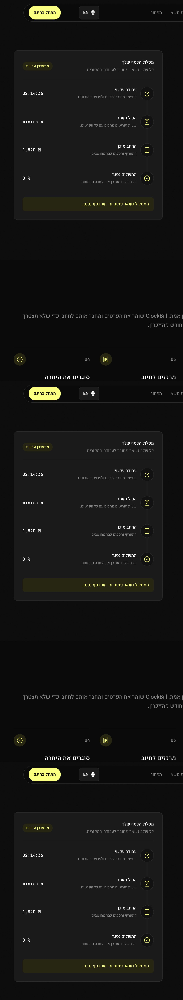
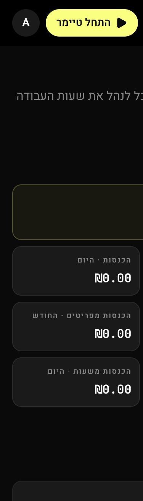

24/40
שימושיות היוריסטית
טובה בבסיס, אך עומס החלטות, היררכיה אחידה מדי וחוסר חיבור בין השלבים פוגעים במהירות.
המוצר כבר נאה, עקבי ומדויק. החסם הבא אינו צבע או כרטיס נוסף. הוא החיבור בין הרגע שבו העבודה קרתה לבין הרגע שבו הכסף נכנס. הדוח בודק את כל המסכים והפלואים ומציע שפה מוצרית אחת: רשמתי, בדקתי, חייבתי, קיבלתי.
הציונים הם כלי לתיעדוף. הם משלבים בדיקה בדפדפן, מעבר על הקוד, מסע משתמש, רספונסיביות, נגישות ועקביות בין שפות.
טובה בבסיס, אך עומס החלטות, היררכיה אחידה מדי וחוסר חיבור בין השלבים פוגעים במהירות.
מבנה RTL ו־i18n טובים. יעדי מגע קטנים, טקסט זעיר ומסכים ארוכים דורשים טיפול.
המסר קיים בשיווק, אבל עדיין לא מנהל את חוויית המוצר אחרי הכניסה.
ההמלצה היא לא לבצע Redesign מלא. עדיף שישה שינויים ממוקדים שמחזירים ערך מהר, ואז שכבה שנייה של האצה ואוטומציה.
ארבעה שלבים: נרשם, מוכן לחיוב, נשלח, התקבל. בכל שלב סכום, כמות ופעולה אחת. להציג חריגים: עבודה בלי פרויקט, חיוב שלא נשלח, תשלום באיחור.
כפתור אחד שפותח Quick Capture. כברירת מחדל: הקשר אחרון, זמן/כמות ותיאור. שדות מתקדמים נפתחים רק לפי הצורך.
לקוח → עבודה שלא חויבה → בדיקה → מסמך → שליחה → תשלום. לשמור טיוטה בכל צעד ולהראות מה חסר.
סיכום יומי קצר עם פערים, טיימרים פתוחים ומשימות שהושלמו ללא רישום. זה פוגע בדיוק בבעיה שהמוצר מבטיח לפתור.
כפתור סגירת משימה נמדד סביב 16–17px, ניווט מובייל סביב 11px, תוויות מדדים סביב 10px. מינימום 24px לפי WCAG 2.2, ומומלץ 44px לפעולות נפוצות.
לשמור Hero, איך זה עובד, הוכחה, התאמה לקהלים, מחיר ו־FAQ קצר. לאחד אזורים שחוזרים על אותה הבטחה. להעביר את בורר 12 הערכות לדף מוצר משני.
Checklist קבוע: עסק, לקוח ראשון, פרויקט ותעריף, רישום ראשון, חיוב ראשון. לא מודל חד־פעמי שנעלם.
לקוח, פרויקט, תעריף וסוג רישום אחרונים. תבניות לעבודות חוזרות. קיצורי מקלדת למשתמש כבד.
פרופיל, עסק ומסמכים, תשלומים, מראה, חשבון. תפריט משנה, שמירה דביקה ותצוגה מקדימה לצד העריכה.
במיוחד ברישומים, משימות ודוחות. משתמש צריך להיות חופשי לנסות בלי לחשוש מאובדן מידע.
בבדיקה, קישור ישיר ל־/en/dashboard חזר לעברית. האתר הציבורי באנגלית תקין ומציג דולר. נדרש E2E ללוקאל אחרי Login ו־Redirect.
37 התרעות סטטיות: בעיקר side tabs, הדגשות מסגרת בכרטיסים וערכי טיפוגרפיה ב־PDF. לתעד את ה־PDF כמערכת Light/Print נפרדת.
המסע נבדק כשרשרת אחת. בכל שלב מופיעים היעד, החיכוך והעיקרון המוצע.
“תגיד לי מה הצעד הבא, בלי שאצטרך להבין את מבנה המערכת.”
צריכה דוגמה, Checklist, שפה פשוטה והצלחה ראשונה בתוך דקות.
“אל תפתח לי טופס מלא על כל רישום.”
צריך Recent, תבניות, Bulk actions, קיצורים ודוחות חוזרים.
“סיימתי פגישה. יש לי עשר שניות לרשום אותה.”
צריך פעולה ביד אחת, אופליין, טיוטה וסגירת יום.
הטבלה כוללת את המסכים הציבוריים, אזור העבודה, מסכי פרטים, הגדרות ואדמין. “עכשיו” מציין תיקון שאפשר להתחיל בלי שינוי ארכיטקטורה.
| מסך / פלואו | מה טוב | בעיה | הצעה | עדיפות |
|---|---|---|---|---|
| דף הבית | Hero חזק וזהות ברורה | ארוך וחזרתי, 11,346px במובייל | לקצר ל־6 אזורים ולהקדים הוכחה | P1 |
| מחיר | שלוש חבילות פשוטות | מנותק מהניווט ומהאתר, toggle קטן | השוואה תוצאתית, חבילה מומלצת, FAQ קצר | P1 |
| הרשמה | שדות ברורים ותנאים | טופס ארוך לפני ערך | פחות שדות, הסבר למה צריך, המשך מודרך | P1 |
| כניסה | משימה יחידה | חסר חיבור לערך שמחכה בפנים | מסר קצר, Magic link בעתיד | P3 |
| שכחתי / איפוס | פלואו מופרד | נדרש חיזוק Success ו־Expiry | מסך אישור, resend ומצב קישור שפג | P2 |
| דשבורד | סיכום רחב ופעולות מהירות | 8 כרטיסי אפס, אין צעד הבא | Money Trail וחריגים לפעולה | P1 |
| רישומים | טבלה, סינון ועריכה | מודל צפוף והרבה יעדי מגע קטנים | Quick Capture, פרטים מתקדמים מקופלים | P1 |
| טיימר התחלה | נגיש מכל מסך | בחירת הקשר עלולה לעכב | Recent context והתחלה מיידית | P1 |
| טיימר פעיל / עצירה | נראות קבועה | הפקדים קטנים סביב 30–32px | 44px, עצירה עם Undo ועריכה מהירה | P1 |
| משימות | Kanban מובן | 7 החלטות במודל, X סביב 17px | Quick add בעמודה, Advanced, יעד 44px | P1 |
| לקוחות | ישות עסקית ברורה | כפתורי עריכה קטנים | שורה לחיצה ותפריט פעולות 44px | P1 |
| פרטי לקוח | הקשר מרוכז | המידע והפעולות מתחרים | תקציר יתרה, Timeline ופעולה הבאה | P2 |
| פרויקטים | Active/Archive | פילטרים בגובה 34px | Tabs רחבים, יתרה ורישום מהיר | P2 |
| פרטי פרויקט | קושר משימה, תעריף ועבודה | מסך ארוך וריבוי אחריות | Overview / Work / Billing עם Summary דביק | P2 |
| דוחות: לחיוב | סכום נבחר ו־CTA דביק | מתחיל במצב ריק גדול | Checklist ובחירת לקוח עם המלצה | P1 |
| דוחות: מסמכים | ארכיון עסקי | מונח Feature ולא תוצאה | סטטוסים טיוטה/נשלח/נצפה/שולם | P1 |
| דוח חד־פעמי | גמישות | קובץ UI מעל 1,300 שורות | Wizard קטן ופירוק רכיבים/מצבים | P2 |
| פרטי מסמך | תצוגה עשירה | הרבה פעולות סביב מסמך | Timeline שליחה, צפייה, תשלום ותזכורת | P2 |
| תשלומים | רישום כסף שנכנס | לא מספיק בולט במסלול הראשי | התאמה למסמך, חלקי/מלא, יתרה | P1 |
| קישור ציבורי | שיתוף בלי חשבון | אמון ונגישות קריטיים | מותג עסק, סכום, סטטוס, הורדה נגישה | P1 |
| חיפוש גלובלי | גישה רוחבית | יכול להיות Finder בלבד | Command palette עם פעולות, לא רק תוצאות | P2 |
| Feedback / Contact | ערוץ משוב קיים | שני מסלולים מקבילים | עזרה עקבית, קטגוריה, Screenshot בהסכמה | P3 |
| הגדרות עסק | כיסוי רחב | עמוד 2,621px וקובץ 1,866 שורות | תפריט משנה, Autosave, Preview צדדי | P2 |
| מראה | 12 ערכות וזהות | בחירה גבוהה בחשיבותה מהעבודה | Preview קטן ולדחות לאחר הפעלה ראשונה | P3 |
| חשבון ושדרוג | מופרד מפרטי עסק | חסר הסבר השפעה לפני פעולה | תוכנית, שימוש, Export ומחיקה ברורים | P2 |
| אדמין / סטטיסטיקות | אחידות עם המוצר | כרטיסים דקורטיביים, 6 התרעות Accent | תור תפעולי, חריגות ומגמות | P3 |
| משתמשים / פרטי משתמש | כלי תמיכה | סיכון לפעולות בלתי הפיכות | Reason, Audit log, confirmation ו־undo כשאפשר | P2 |
| Privacy / Terms | מסכים ייעודיים | טקסט משפטי ארוך | תקציר אנושי, תוכן עניינים ותאריך | P2 |
| נגישות | הצהרה קיימת | יש לאמת פרטי קשר ותאריך בדיקה | רכז, ערוצים, חריגים, תאריך ועדכון קבוע | P1 |
| Offline / Not found | מצבים קיימים | עלולים להחזיר משתמש לנקודת אפס | טיוטות מקומיות, Retry והמשך למשימה אחרונה | P2 |
ההמחשות הן כיוון אינטראקציה והיררכיה, לא Pixel-perfect. הן נשענות על השפה הקיימת כדי שהשינוי ירגיש ClockBill.

רושמים בזמן העבודה, בודקים מה מוכן לחיוב ורואים מה כבר שולם. מסלול אחד, בלי גיליונות ובלי זיכרון.
שינוי מוצע: פחות סופרלטיבים, יותר בעיה מוכרת ותוצאה. אחרי ה־Hero: אנימציה קצרה של רשמתי → חייבתי → קיבלתי, ואז הוכחה ומחיר.

שינוי מוצע: ארבעה שלבים עם סכום ופעולה. לא להציג שמונה כרטיסים כשאין נתונים. Empty state צריך להיות צעד, לא אפס.
טיימר, רישומים ולקוח ראשון.
חיובים, מסמכים ומעקב תשלום.
כמה מותגים, תבניות וייצוא.
מתחת לכרטיסים: טבלת 8 יכולות בלבד, שאלות על ביטול, מטבע ומסמכים, וקישור לתמיכה.
מראה את השווי לפני השמירה, זוכר הקשר אחרון ומשאיר הערות, תאריך וסוג חיוב תחת “עוד פרטים”.
הסכום, הבעיות והשלב הבא גלויים תמיד. טיוטה נשמרת אוטומטית.
אפשר לדלג, לחזור, ולהתחיל עם נתוני דוגמה. ההתקדמות נשארת בדשבורד עד לערך הראשון.
כל אזור מקבל Summary, מצב שמירה ותצוגה מקדימה. אין עמוד יחיד של יותר מ־2,600px.
להגדיל סגירה, עריכה, פילטרים, טיימר וניווט. WCAG 2.2 מגדיר 24×24px כמינימום ברמת AA, עם חריגים. בפעולות תכופות ובמובייל יעד של 44px נוח יותר.
לא להשתמש ב־10–11px למדדי כסף או ניווט. Preview של PDF יכול להיות מוקטן, אבל צריך Zoom או Open preview. לבדוק ניגודיות של muted text בכל 12 הערכות.
האתר הציבורי עובר נכון ל־LTR ודולר. להוסיף בדיקות E2E להתמדה אחרי כניסה, Deep links, סכומים מעורבים ותאריכים. לעטוף סכומים ב־<bdi> או Unicode isolate.
בכל מסך נתונים: Loading עם skeleton ששומר פריסה, Empty עם פעולה אחת, Error בעברית עם Retry ו־request ID פנימי, Success עם feedback ו־Undo. מצב ריק צריך להסביר מה המשתמש יקבל אחרי הפעולה, לא רק לומר שאין נתונים.
להציג רמת התאמה, מה הונגש, מגבלות ידועות, פרטי רכז/אשת קשר, כמה ערוצי פנייה ותאריך עדכון. זו המלצת מוצר, לא חוות דעת משפטית; יש לאמת תחולה בישראל, בארה״ב ובמדינות היעד באירופה.
רק פיצ'רים שמחזקים את הבטחת הליבה: לא לפספס עבודה ולעקוב עד הכסף.
השוואה בין משימות, טיימרים ורישומים. “סיימת משימה בלי לרשום זמן?”
תור אחד של מסמכים שלא נצפו, הגיע מועד התשלום או עבר.
תבנית לרטיינר, פגישה שבועית או פריט קבוע, עם אישור לפני רישום.
CSV, Calendar או הצעות מטיוטות. כל דבר נכנס ל־Inbox לבדיקה, לא אוטומטית לספרים.
מסמך, סטטוס, תשלום והערה במקום אחד, בלי יצירת חשבון חובה.
מטבע למסמך וללקוח, מטבע בסיס לדוחות, שער ותאריך שער גלויים. לא להסיק מטבע רק מהשפה.
ייבוא בנק/Stripe/PayPal והתאמה מוצעת למסמך. המשתמש מאשר התאמה.
חיפוש וגם פעולות: התחל טיימר, פתח לקוח, רשום תשלום, צור חיוב.
לא “עבדת 42 שעות”, אלא “₪1,850 מוכנים לחיוב” ו“לקוח אחד משלם לאט ב־9 ימים”.
להוסיף: אחוז עבודה שנרשמה אך לא חויבה, זמן משליחה לתשלום, אחוז משתמשים שסיימו Checklist, נטישת טפסים, טעויות שנמנעו ו־support tickets לפי מסך.
צילומי האפליקציה בדוח צומצמו כדי לא לשמור שם, אימייל, פרטי מס או פרטי לקוחות מהסשן המקומי.
הסקירה אינה ייעוץ משפטי. היא מסמנת סיכוני UX ונגישות ומפנה למקורות רשמיים עדכניים בזמן הבדיקה.